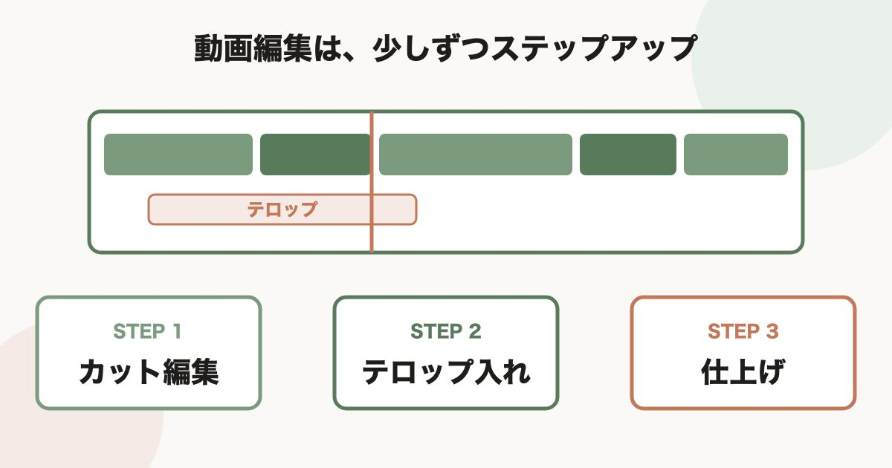

結論：動画編集は、未経験から3つのステップで進められます
「YouTubeは好きだけれど、編集はやったことがない」。そんな方でも、LICOの動画編集は無理なく始められます。いきなり完成度の高い動画を求めるのではなく、簡単な作業から順番に、できることを増やしていく進め方だからです。
動画編集の3ステップ

STEP 1：カット編集
撮影した映像から、言い間違いや間（ま）などの不要な部分を切って、つなぎ合わせる作業です。動画編集の基本中の基本で、成果がすぐ画面に表れるので、達成感を得やすいステップです。
STEP 2：テロップ入れ
話している内容を、画面の文字（字幕）にしていきます。YouTube動画でよく見る、あの文字です。文字の大きさや色、出すタイミングで動画の見やすさが変わるので、細かい作業が好きな方に向いています。
STEP 3：仕上げ
BGMなどを加えて、動画全体を整えます。見る人が最後まで楽しめるように、全体の流れを見ながら調整します。
なぜ福岡市西区のB型で動画編集なのか
動画編集は、パソコンがあれば取り組める作業です。座って集中する作業なので、人と話すことが多い仕事に苦手意識がある方にも、取り組みやすい面があります。また、動画の需要は広がっているため、身につけた経験を次の一歩につなげたい方にも、選ばれる作業です。
もちろん、事業所での作業と就職は別のものです。一般就労を目指す場合は、定期的な面談で目標を整理しながら進めます。
パソコン初心者の進め方
パソコンの操作に自信がない方は、最初にマウスとキーボードの練習から始めます。動画編集の学習には、映像で手順を追える「動画マニュアル」と、文章と画像で確かめられる「テキストマニュアル」の二本立てのマニュアルがあります。調子に合わせて選べ、忘れても見返せます。基礎練習の流れは、パソコン未経験の方向けの記事で紹介しています。
動画編集が向いている人
- YouTubeやショート動画をよく見る
- 一つのことに集中して取り組むのが得意
- 文字の位置や色など、細かい部分にこだわりたい
- 完成したものが形に残る仕事がしたい
- パソコンのスキルを身につけたい
当てはまる項目が少なくても大丈夫です。3Dプリンターを使ったものづくりなど、ほかの作業と組み合わせて、自分に合う仕事を探すこともできます。
動画編集のスキルが活きる場面
動画編集で身につくのは、ソフトの操作だけではありません。素材を見て不要な部分を判断する力、文字を読みやすく整える感覚、期日までに仕上げる段取りなど、ほかの作業にも通じる力が養われます。パソコン作業全般への自信にもつながるので、将来どの道に進む場合も、役立つ経験になります。
見学で確認したいこと
- 実際の編集画面と、作業の進め方
- パソコン初心者の場合の、最初の練習内容
- 在宅で作業する場合の考え方
福岡市西区で動画編集に取り組めるB型事業所を探している方は、見学で気になる点を聞いてみてください。
同じ「好き」を持つ仲間がいる
LICOには、動画編集やYouTubeが好きな方が通い始めています。好きなものが共通していると、作業の合間の会話が自然に生まれやすくなります。反対に、一人で集中したい方は、自分の席でじっくり取り組めます。
よくある質問
- 動画編集は未経験でもできますか？
- できます。最初は「不要な部分を切る」という簡単な作業から始め、慣れてきたらテロップ入れに進みます。パソコン自体に慣れていない方は、基本操作から練習できます。
- 自分のパソコンやソフトを用意する必要はありますか？
- 見学・体験のときに、作業の環境についてご説明します。必要なものがある場合も、利用開始前にご案内します。
- 見学で編集の作業を見られますか？
- はい。見学・体験では、編集画面を見学したり、実際に操作を試したりできます。
- 在宅で動画編集はできますか？
- パソコン作業は在宅での利用も相談できます。通所と組み合わせるのが基本です。くわしくは在宅利用の記事をご覧ください。